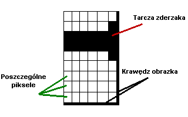

Zasady tworzenia i nazywania rysunków taboru
Spisa³ Grzegorz Piotrowski.
Przy tworzeniu rysunków do Programu Kolejarz przyjêto pewne za³o¿enia, które podczas tworzenia w³asnych rysunków nale¿y uwzglêdniæ. Pozwoli to na swobodn± wymianê rysunków, mo¿na powiedzieæ - pe³n± ich kompatybilno¶æ.
- Przyjêto, ¿e jeden piksel to 17 cm w rzeczywisto¶ci. Takie przeliczenie pozwala na zachowanie jednakowej skali wszystkich rysunków.
- Ka¿dy rysunek musi byæ starannie wykonany. Nale¿y pamiêtaæ o w³a¶ciwej liczbie okien, ilo¶ci kó³ w wózkach lokomotyw, w³a¶ciwym umieszczeniu szczegó³ów, itd. Oprócz oczywistej staranno¶ci, konieczne jest spe³nienie ram dotycz±cych wymiarów. Dla u³atwienia tworzenia, podaje podstawowe d³ugo¶ci, które musz± byæ przestrzegane. Ze wzglêdu na pewne uproszczenia dopuszczalne jest, aby d³ugo¶æ ca³ego wagonu ró¿ni³a siê maksymalnie o +/- 1 piksel od przyjêtej skali:
- Wagony o d³. 24,5 m - 144 piksele
- Wagony o d³. 26,4 m - 155 pikseli
- Wagony towarowe - d³ugo¶æ przeliczana bezpo¶rednio ze skali
- Wysoko¶æ wagonu (wyj±tek: wagony piêtrowe i towarowe) - 25 pikseli
- Wysoko¶æ ca³ego rysunku - 40 pikseli
- Wysoko¶æ zderzaka (jego tarczy) nad doln± krawêdzi± obrazka MUSI wynosiæ 4 piksele. 
- Wysoko¶æ od dolnej krawêdzi obrazka do wirtualnej sieci trakcyjnej to 32 piksele. Znaczy to tyle, ¿e górne czê¶ci wagonów jak i lokomotyw nie mog± byæ wy¿sze (zosta³aby przekroczona skrajnia)! Dotyczy to równie¿ wagonów towarowych wraz z ³adunkiem.
- Harmonia, lub ko³nierz umo¿liwiaj±cy przechodzenie z wagonu do wagonu powinien równie¿ znajdowaæ siê nie ni¿ej ni¿ 4 piksele od dolnej krawêdzi obrazka. Jej wysoko¶æ maksymalna to 20 pikseli.
- Sam rysunek taboru nie mo¿e zawieraæ jakichkolwiek elementów tego samego koloru co t³o obrazka. Kolor t³a powinien byæ tylko i wy³±cznie u¿yty do tego celu. T³o powinno byæ koloru bia³ego (b±d¼ je¿eli istnieje taka mo¿liwo¶æ nie powinno byæ pokolorowane).
- Pliki rysunków taboru musz± byæ zapisane wy³±cznie w formacie "BMP - Windows Bitmap", gdy¿ tylko taki format rozpoznaje program.
- Ka¿dy rysunek nazywamy stosuj±c 5 cech. Ich kombinacja tworzy niepowtarzalny ci±g znaków, dok³adnie opisuj±c typ, przeznaczanie, oraz okres w którym przedstawiany tabor jest lub by³ u¿ywany. Ka¿da cecha jest oddzielona pojedynczym znakiem "_". Nazwa nie mo¿e zawieraæ jakichkolwiek polskich liter oraz spacji.
- W ka¿dej nazwie musz± kolejno znale¼æ siê nastêpuj±ce informacje:
- Oznaczenie w³a¶ciciela taboru stosowane wg systematyki ustalonej przez organizacjê UIC:
przyk³ad:
1) PKP_ - tabor holdingu PKP S.A.
2) DB_ - tabor kolei DB A.G.
Wyj±tek: W przypadku spó³ek utworzonych przez kilku operatorów do obs³ugiwania jednego po³±czenia, wpisujemy symbol charakteryzuj±cy to po³±czenie np.
1) BWE_ - tabor holdingu PKP S.A. i DB A.G.
2) THALYS_ - tabor kolei DB A.G., SNCF i SNCB
- Kategoria przestawionego taboru:
- _WO_ - wagony osobowe
- _WT_ - wagony towarowe
- _L_ - lokomotywy
- _E_ - EZT - poci±gi zespolone w tym autobusy szynowe
- _S_ - poci±gi sieciowe, robocze, maszyny (np. podbijarka) itd.
- _T_ - tramwaje
- _WASK_ - tabor w±skotorowy (bez podzia³u)
przyk³ad:
1) PKP_WO_ - wagon osobowy nale¿±cy do PKP
2) PKP_L_ - lokomotywa nale¿±ca do PKP
- Okres pochodzenia taboru:
- _TW_ - tabor wspó³czesny
- _TZ_ - tabor zabytkowy
przyk³ad:
1) PKP_WO_TW_ - wspó³czesny wagon osobowy nale¿±cy do PKP
2) PKP_L_TZ_ - zabytkowa lokomotywa nale¿±ca do PKP
- Oznaczenie typu taboru:
przyk³ad:
1) PKP_WO_TW_Bdnu_ - wspó³czesny wagon osobowy PKP typu Bdnu
2) PKP_L_TW_EP09_ - wspó³czesna lokomotywa PKP typu EP09
- Numer porz±dkowy, dla ró¿nych rysunków przedstawiaj±cych ten sam tabor. Numeracja rozpoczyna siê od "01" i zawsze jest dwucyfrowa. Numer jest czê¶ci± nazwy dlatego musi byæ stosowany, nawet w przypadku gdy istnieje tylko 1 obrazek tego samego taboru.
przyk³ad:
1) PKP_WO_TW_Bdnu_01 - wspó³czesny wagon osobowy PKP typu Bdnu, rysunek nr 1
2) PKP_WO_TW_Bdnu_02 - wspó³czesny wagon osobowy PKP typu Bdnu, rysunek nr 2
- Do utworzonej nazwy po kropce dopisujemy rozszerzenie - "*.bmp". Rozszerzenie jest czê¶ci± nazwy ka¿dego pliku w systemie Windows, a nie cech± opisuj±c± zawarto¶æ rysunku, dlatego przed nim stawiamy wg wymogu systemu KROPKE.
przyk³ady pe³nych nazw:
1) PKP_WO_TW_Bdiu_01.bmp
2) PKP_WO_TW_Bh_03.bmp
3) PKP_WO_TW_WLAB_01.bmp
4) BWE_WO_TW_Bdmnu(61)_01.bmp
5) PKP_WO_TZ_Bx_01.bmp
6) PKP_E_TW_EN57_12.bmp
7) PKP_E_TW_SA101_01.bmp
8) PKP_WT_TW_Flls-411V_01.bmp
9) PKP_WT_TW_Gags-401Ka_01.bmp
10) PKP_L_TZ_Ty51_01.bmp
11) OeBB_WO_TW_ABmz_01.bmp
12) MAV_WO_TW_Bpmz_01.bmp
13) CD_WO_TW_Amee_01.bmp
14) DB_WO_TW_Bpmz_01.bmp
15) DB_L_TW_BR218_01.bmp
Prawid³owe rozmiary rysunków
| Seria |
D³ugo¶æ rzeczywista [mm] |
D³ugo¶æ w Kolejarzu [piksele]] |
| EP03 | 14170 | 83 |
| EP05 | 16140 | 95 |
| EU06 | 15915 | 94 |
| EU07 | 15915 | 94 |
| EP08 | 15915 | 94 |
| EP09 | 16740 | 98 |
| EM10 | 16340 | 96 |
| EU11 | 19400 | 114 |
| ET21 | 16500 | 97 |
| ET22 | 19240 | 113 |
| ET40 | 34420 | 202 |
| ET41 | 31860 | 187 |
| ET42 | 30880 | 182 |
| SM03 | 7000 | 41 |
| SM30 | 10140 | 60 |
| SM31 | 17000 | 100 |
| SP32 | 16000 | 94 |
| SM42 | 14240 | 84 |
| SP42 | 14240 | 84 |
| SU42 | 14240 | 84 |
| ST43 | 17000 | 100 |
| ST44 | 17550 | 103 |
| SU45 | 18990 | 112 |
| SU46 | 18990 | 112 |
| SM48 | 16970 | 100 |
| EN57 | 64970 | 382 |
| EN71 | 86840 | 511 |
| ED72 | 86840 | 511 |
| ED73 | 86200 | 507 |
| EN94 | 27600 | 162 |
| EW55 | 63700 | 375 |
| EW58 | 64640 | 380 |
| wagony: 24,5m | 24500 | 144 |
| wagony: 26,4m | 26400 | 155 |
| Bdhpumn | 26800 | 158 |
| Bhp | 73400 | 432 |
| Eaos | 14040 | 83 |